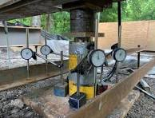

Testing Procedure
After Continuous Flight Auger (CFA) piling is completed, pile load testing is carried out to verify the load capacity and settlement behavior of the pile.
Steps Involved
Pile Load Test Setup

After Continuous Flight Auger (CFA) piling is completed, pile load testing is carried out to verify the load capacity and settlement behavior of the pile.
